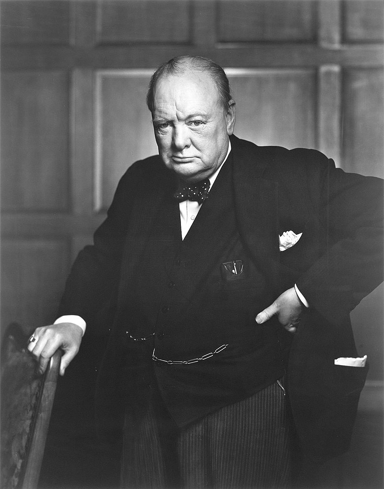
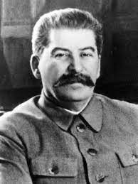
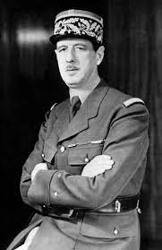
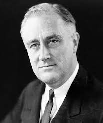
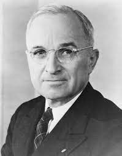

The Most Significant People In WW2
The of the most powerful and influential people during world war 2 is an interesting topic, as there is no correct, or right answer.
There are many people that have influenced the war greatly, and led to victories, defeats, and change.
But without some people, the course of the war could have been changed and gone very differently.
I am talking about Winston Churchill, Joseph Stalin, Charles de Gaulle, Franklin D. Roosevelt, and Harry S. Truman.
These 5 men were the leaders of the Allied power that directly fought against Nazi Germany, Italy, and Japan.

Winston Churchill was the former prime minister of the United Kingdom from 1940-1945, and 1951 to 1955.
Winston Churchill is regarded by many to be the greatest Briton ever and he rallied the British people and led the country from the brink of defeat to victory.
He shaped the allies strategy in the war, as well as his personality was vital in cementing the alliance with Russia and the United States.

Joseph Stalin was the general secretary of the communist party of the Soviet Union from 1922 to 1952, and the Chairman of the Council of Ministers of the Soviet Union in 1941 to 1953.
Joseph Stalin signed a nonaggression pact with Nazi Germany in 1939, but Germany ended the pact by invading the Soviet union in 1941. Although initially the invasion was catastrophic the soviet army repelled the German invasion
and ended up capturing Berlin in 1945, ended World War 2 in Europe.

Charles de Gaulle led the Free French forces in resisting capitulation to Germany during World War 2.
Charles de Gaulle later became the provisional president of France in the immediate aftermath of the war and became president from 1959 to 1969, and fought to restore democracy as the head of the French provisional government.

The U.S. president Franklin D. Roosevelt led the United States though a near decade of Depression, and took the role of Commander-in-chief.
Franklin D. Roosevelt passed the Lend-Lease act which allowed the United States to lend or lease war supplies to any nation deemed "vital" to the defense of the United States, he also provided, although limited, military support in addition to the Lend-Lease Act.

The 33rd U.S. President Harry S. Truman was one of the main contributors of the deadliest attacks against the enemy sides.
Harry S. Truman after the consultations of his advisors, ordered atomic bombs dropped on cities devoted to war work. Of those cities, two were Hiroshima and Nagasaki, killing some were between 129,000 and 226,000. And quickly following these events the Japanese surrendered.
All of these people influenced the war immensely and they are some of the main reasons that the war ended sooner, possibly a few years longer. They all contributed immensely to the victory of the allies.